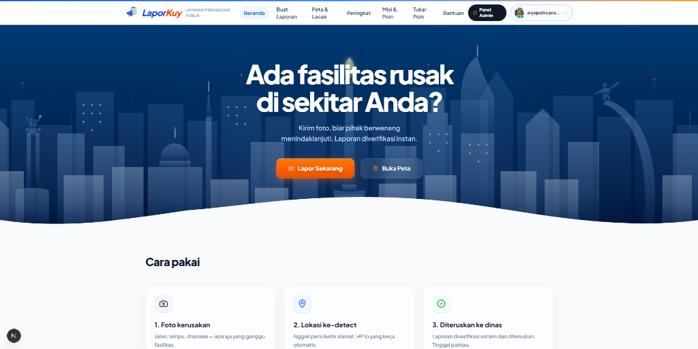

Karya Kompetisi / Hackathon Universitas Negeri Jakarta (UNJ)
•
Full-Stack & UI/UX
LaporKuy — AI-Powered Civic-Tech Platform
Dikembangkan sebagai inovasi solusi digital dalam ajang kompetisi di Universitas Negeri Jakarta (UNJ). Proyek ini bertujuan menjawab lambatnya penanganan fasilitas publik dan minimnya transparansi tindak lanjut laporan warga dengan pendekatan AI vision dan psikologi gamifikasi partisipatif.
AI Quick Report (30 Detik)
Deteksi otomatis koordinat GPS, pengecekan duplikasi laporan radius 200m, dan klasifikasi visual instan.
SLA Transparansi Publik
Dashboard terbuka untuk mengukur rata-rata respon dinas kota secara akuntabel.
Gamifikasi Partisipatif
Sistem level warga, streak harian, quest mingguan, dan katalog penukaran poin reward.
Next.js 16
React 19
TypeScript
Tailwind CSS
Supabase Realtime
Multi-Model AI Vision
MapLibre
Kode Sumber